🎯 Learning Objectives
By the end of this lesson, you will be able to:
- Navigate and understand the Timeline interface
- Create, edit, and delete keyframes efficiently
- Use different interpolation modes for motion control
- Work with the Dope Sheet for animation management
- Use auto-keyframing for faster workflows
- Organize animations with markers and frame ranges
- Apply professional keyframing best practices
📋 What You'll Learn
- Time Required: 60-90 minutes
- Difficulty: Beginner-Intermediate
- Prerequisites: Lesson 24 (Animation Fundamentals)
- Project: Multi-object animation demonstrating timeline mastery
In This Lesson
🎬 Understanding the Timeline
The Timeline is where your animation lives. Think of it as a music sequencer—each keyframe is a note, and together they create the melody of motion. Let's explore this essential interface.
What is the Timeline?
📊 Your Animation Dashboard
The Timeline shows:
- Time ruler: Frame numbers across the top (1, 24, 48, 96...)
- Current frame indicator: Blue vertical line (playhead)
- Keyframes: Diamond markers showing where animation is defined
- Frame range: Start and end frames for your animation
- Playback controls: Play, pause, jump to start/end
Default location:
- Bottom of screen in Animation workspace
- Can be changed to different editor type
- Usually narrow horizontal strip
- Expandable for more detail
What the Timeline does:
- Shows when keyframes exist
- Lets you scrub through animation
- Controls playback speed and range
- Provides quick access to frame navigation
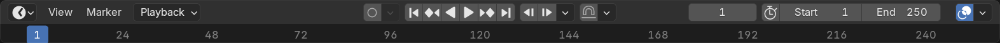
Timeline Anatomy
🔍 Interface Breakdown
Top bar (frame ruler):
- Frame numbers: Every major frame labeled (1, 12, 24, 36...)
- Tick marks: Small marks for every frame or every few frames
- Current frame display: Number box on left showing current frame
- Start/End frame boxes: Define animation range
Main area (keyframe display):
- Yellow diamonds: Keyframes on selected object
- Orange diamonds: Keyframes on non-selected objects in view
- Blue vertical line: Current frame (playhead)
- Green markers: Frame markers (notes/bookmarks)
Bottom bar (playback controls):
- Jump to start:
Shift+Left Arrowor button - Step backward:
Left Arrowor button - Play/Pause:
Spacebaror button - Step forward:
Right Arrowor button - Jump to end:
Shift+Right Arrowor button
Frame Rate and Time
⏰ Understanding Animation Time
Frame rate basics:
- FPS (Frames Per Second): How many frames shown per second
- 24 fps: Film standard (most common for animation)
- 30 fps: US TV standard
- 60 fps: Smooth gameplay, slow-motion base
- Higher fps = smoother motion, more frames to animate
Setting frame rate:
- Output Properties panel → Frame Rate dropdown
- Default: 24 fps (good for most projects)
- This affects playback speed but not frame numbers
Frame to time conversion (at 24 fps):
- 24 frames = 1 second
- 12 frames = 0.5 seconds (half second)
- 6 frames = 0.25 seconds (quarter second)
- 96 frames = 4 seconds
- 240 frames = 10 seconds
Why frames, not seconds?
- Frames give precise control (can't have "half a frame")
- Industry standard—animators think in frames
- Easy to communicate ("keyframe at frame 24" is clear)
- Frame rate can change without affecting animation
Navigation and Playback
🎮 Moving Through Time
Essential keyboard shortcuts:
Spacebar: Play/Pause animationLeft Arrow: Previous frameRight Arrow: Next frameShift+Left Arrow: Jump to startShift+Right Arrow: Jump to endUp Arrow: Jump forward 10 framesDown Arrow: Jump backward 10 frames
Mouse navigation:
- Click in timeline: Jump to that frame
- Drag playhead: Scrub through animation (smooth preview)
- Scroll wheel: Zoom in/out on timeline
- Middle-click drag: Pan left/right
Playback options:
- Play animation: Spacebar (loops by default)
- Play in reverse: Playback menu → Play Backwards
- Sync to audio: Playback → Audio Scrubbing
- Limit frame range: Use Start/End frame values
Pro tip: Scrubbing vs Playing
- Scrubbing (dragging playhead): See every frame, precise control
- Playing (Spacebar): Real-time speed, see timing/rhythm
- Use both! Scrub for details, play for overall feel
Frame Range Settings
📏 Defining Your Animation Length
Start and End frames:
- Start frame: Usually 1 (can be 0 or any number)
- End frame: Default 250, set to your animation length
- Example: 96-frame animation → End frame = 96
- Timeline only shows this range during playback
Setting frame range:
- In Timeline: Edit Start/End frame number boxes
- In Output Properties: Frame Range section
- Quick set: Select frames, Playback → Set Frame Range
Preview range (subset of animation):
- Want to loop just frames 24-48? Set preview range
Pin Timeline: Set preview range startAlt+P: Clear preview range- Gray bar shows preview range in timeline
- Useful for perfecting small sections
Common frame ranges:
- 24 frames: 1-second test animations
- 96 frames: 4-second short animations (Lesson 24 bouncing ball)
- 240 frames: 10-second clips
- 600+ frames: Longer animations (25+ seconds)
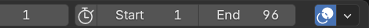
💡 The Timeline: Your Animation GPS: Just as a GPS shows you where you are on a map, the Timeline shows where you are in time. That blue playhead is your position—frame 24 of 96. Those yellow diamonds are your destinations—keyframes you'll animate between. The Timeline doesn't create animation (you do that in the 3D viewport), but it's your constant reference. Professional animators keep one eye on the Timeline at all times, always aware of where they are in time and where their keyframes live. Master Timeline navigation and you've mastered half of animation workflow.
🔑 Keyframe Fundamentals
Keyframes are the foundation of animation. They're the "key" poses or states that define your animation. Blender calculates everything between keyframes automatically. Understanding keyframes deeply is essential for efficient animation.
What is a Keyframe?
📍 Defining Moments in Time
Keyframe definition:
- A saved state of a property at a specific frame
- "At frame 1, sphere is at X=0, Y=0, Z=0"
- "At frame 24, sphere is at X=5, Y=0, Z=0"
- Blender calculates positions for frames 2-23 automatically
What can be keyframed:
- Location: Object position (X, Y, Z)
- Rotation: Object orientation (X, Y, Z angles)
- Scale: Object size (X, Y, Z dimensions)
- Material properties: Color, roughness, emission
- Modifiers: Strength, parameters
- Almost anything: If it has a number, it can be keyframed
The pose-to-pose workflow (from Lesson 24):
- Create start pose at frame 1 (keyframe)
- Create end pose at frame 24 (keyframe)
- Blender interpolates frames 2-23
- Add breakdown poses as needed (more keyframes)
- Refine timing and spacing
Keyframes vs transforms:
- Transform: Moving object in viewport (temporary)
- Keyframe: Saving that transform at a specific frame (permanent)
- Without keyframes, your changes don't persist across frames
- Keyframes "lock in" your animation at specific moments
The Interpolation Concept
🔄 The Magic Between Keyframes
Interpolation explained:
- Interpolation: Calculating values between keyframes
- Frame 1: Object at X=0 (keyframe)
- Frame 24: Object at X=10 (keyframe)
- Frame 12: Object at X=5 (interpolated—calculated by Blender)
- You set endpoints, Blender fills the middle
Why interpolation matters:
- You don't animate every frame manually (would take forever)
- Keyframe major poses, let computer handle in-betweens
- Just like Disney's lead animators and in-betweeners
- You're the lead animator, Blender is the in-betweener
Different interpolation types (preview):
- Bezier (default): Smooth curves (ease in/out)
- Linear: Straight line (constant speed)
- Constant: No interpolation (holds value)
- We'll explore these in detail shortly
Keyframe Visualization
👁️ Seeing Your Keyframes
In the Timeline:
- Yellow diamonds: Keyframes on selected object
- Orange diamonds: Keyframes on other objects
- Tall diamond: Keyframe at current frame
- No diamond: No keyframe, interpolated value
In the 3D Viewport:
- Selected object properties turn orange when keyframed
- Example: Location property in properties panel shows orange background
- This indicates "this property has keyframes"
- Non-keyframed properties stay gray
Color coding meanings:
- Yellow: Active object's keyframes
- Orange: Property is keyframed (background)
- White/Gray: Property not keyframed
- Green: Keyframe at current frame (Graph Editor)
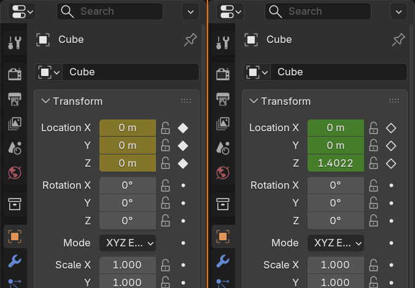
Channel Concept
📺 Understanding Animation Channels
What is a channel?
- A channel is one animatable property
- Example: Location X is a channel, Location Y is another
- Each channel has its own keyframes
- Object can have dozens of channels
Common channels:
- Location X: Left/right position
- Location Y: Forward/backward position
- Location Z: Up/down position
- Rotation X/Y/Z: Three rotation axes
- Scale X/Y/Z: Three scale dimensions
Keyframing individual channels:
- Can keyframe all channels together (Location X, Y, Z at once)
- Or keyframe individually (just Location X this frame)
- Flexibility for complex animations
- Example: Animate X position but not Y or Z
Why this matters:
- Not everything needs to animate together
- Door rotates (Rotation Z), but doesn't move (Location)
- Cube moves left/right (X), but not up/down (Z)
- Selective keyframing keeps animation organized
➕ Creating and Inserting Keyframes
Now that you understand what keyframes are, let's learn the many ways to create them. Blender offers multiple methods, each suited to different workflows. Master these and you'll be keyframing like a pro.
The Primary Method: Insert Keyframe Menu
🔑 The Standard Workflow
Basic keyframing process:
- Select object in 3D Viewport
- Move to desired frame (click in Timeline or arrow keys)
- Transform object (move, rotate, scale)
- Press
Ito open Insert Keyframe menu - Choose what to keyframe (Location, Rotation, Scale, etc.)
- Keyframe appears in Timeline as yellow diamond
Insert Keyframe menu options (I key):
- Location: Keyframe X, Y, Z position
- Rotation: Keyframe X, Y, Z rotation
- Scale: Keyframe X, Y, Z scale
- LocRot: Location and Rotation together
- LocScale: Location and Scale together
- LocRotScale: All three transforms at once (most common)
- Available: Only keyframe properties that have changed
Example: Animating a cube moving right
- Frame 1: Cube at X=0, press
I→ Location - Frame 24: Move cube to X=5, press
I→ Location - Play animation: Cube moves from X=0 to X=5 smoothly
- Two keyframes, 22 interpolated frames between
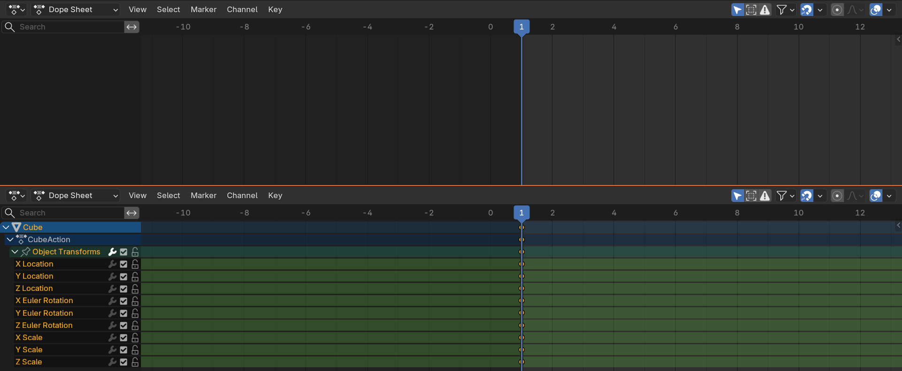
Right-Click Method (Quick)
⚡ Fast Property Keyframing
How it works:
- Hover mouse over any number property
- Right-click to open context menu
- Select "Insert Keyframe" or "Insert Single Keyframe"
- That specific property gets keyframed
When to use this:
- Keyframing individual channels (just Location X, not Y or Z)
- Keyframing material properties (color, roughness)
- Keyframing modifier values
- Any property with a number you want to animate
Example: Animating material emission
- Shader Editor: Emission Strength value
- Frame 1: Set Strength to 0, right-click → Insert Keyframe
- Frame 24: Set Strength to 5, right-click → Insert Keyframe
- Object glows from 0 to 5 over time
Visual feedback:
- Property background turns orange when keyframed
- Yellow diamond appears at current frame in Timeline
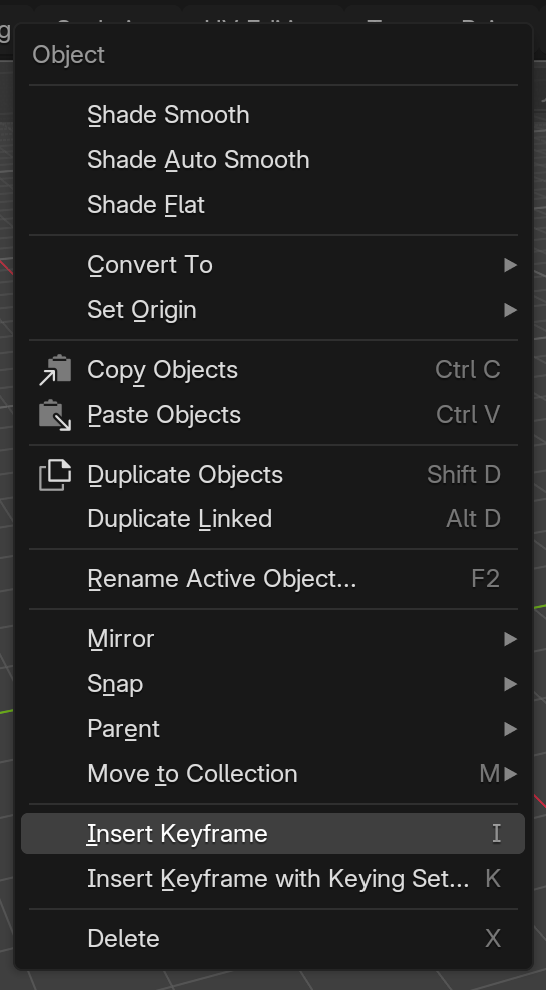
Button Method (Properties Panel)
🖱️ Click-to-Keyframe
The keyframe button:
- Small diamond icon next to most properties
- Click to insert keyframe for that property
- Diamond turns yellow/orange when keyframed
- Same as right-click method but more visible
Where to find it:
- Properties panel: Next to Location, Rotation, Scale values
- Material properties: Next to colors, values
- Modifier properties: Next to strength, parameters
- Almost anywhere with a number field
Advantage:
- Visual—can see what's keyframed at a glance
- Precise—keyframe exactly what you want
- Good for beginners learning what can be animated
Keyframing Best Practices
✅ Professional Workflows
Start with major poses (blocking):
- Keyframe start pose at frame 1
- Keyframe end pose at final frame
- Add key middle poses (extremes)
- Then add breakdowns between extremes
- Don't keyframe every frame—let interpolation work
Choose appropriate keyframe type:
- Location only: If object only moves (no rotation/scale)
- Rotation only: If object only rotates (door, wheel)
- LocRotScale: When everything changes (safest choice)
- Don't keyframe things that don't change (wastes memory)
Be frame-aware:
- Always check current frame before keyframing
- Easy mistake: keyframe on wrong frame
- Timeline shows current frame prominently—use it
- Double-check after keyframing (diamond at right frame?)
Name your actions (optional but helpful):
- Dope Sheet → Action Editor → Name field
- Default: "CubeAction"
- Better: "Cube_Bounce", "Door_Open", "Ball_Roll"
- Helps when managing multiple animations
Common Keyframing Mistakes
⚠️ Avoid These Pitfalls
Mistake 1: Keyframing before transforming
- Wrong order: Press
I, then move object - Keyframe saves old position, not new one
- Right order: Move object, then press
I - Always transform first, keyframe second
Mistake 2: Wrong frame selected
- You're at frame 10 but meant to keyframe at frame 12
- Keyframe goes to current frame, not where you intended
- Solution: Always verify current frame first
- Look at blue playhead position in Timeline
Mistake 3: Keyframing wrong object
- Camera selected instead of cube
- Keyframe goes to wrong object
- Solution: Check outliner—selected object highlighted
- Only selected objects get keyframes
Mistake 4: Over-keyframing
- Keyframing every single frame manually
- Defeats purpose of interpolation
- Makes editing nearly impossible
- Solution: Trust interpolation, use fewer keyframes
Mistake 5: Not checking keyframe type
- Accidentally keyframe Location when you meant Rotation
- Creates unwanted keyframes on other channels
- Solution: Pay attention to
Imenu choice - Use right-click method for specific properties
💡 The Art of Keyframe Placement: Beginners keyframe frantically—dozens of keyframes for simple motions. Professionals are strategic—they place keyframes only where needed. Think of keyframes as waypoints on a journey. You don't need a waypoint every step; you need them at major turns and destinations. A character walking across screen? Maybe 4 keyframes total—start, two steps, end. Blender handles everything between. Learn to trust interpolation. Your goal isn't maximizing keyframes; it's minimizing them while maintaining control. That's the professional mindset.
📈 Interpolation Modes
Interpolation is how Blender calculates values between your keyframes. Different interpolation modes create dramatically different motion. Understanding these modes is crucial for controlling timing and feeling.
Bezier Interpolation (Default)
🌊 Smooth, Natural Curves
What Bezier does:
- Creates smooth acceleration and deceleration
- Automatically adds ease-in and ease-out
- Most natural-looking motion
- Mimics real-world physics (nothing moves at constant speed)
This is the "Slow In and Slow Out" principle from Lesson 24:
- Movement starts slowly (accelerates)
- Reaches full speed in middle
- Slows down at end (decelerates)
- Creates organic, appealing motion
When to use Bezier:
- Almost always: It's default for good reason
- Character animation: Organic, lifelike motion
- Camera moves: Smooth, professional
- Object animation: Natural acceleration
- Only exception: When you specifically need different behavior
Visual in Graph Editor:
- Smooth S-curve between keyframes
- Handles on keyframes (control curve shape)
- Gentle slopes at start/end (slow)
- Steep slope in middle (fast)
Linear Interpolation
📏 Constant Speed
What Linear does:
- Straight line between keyframes
- Constant speed—no acceleration or deceleration
- Object jumps to full speed instantly, stops instantly
- Robotic, mechanical feeling
When to use Linear:
- Mechanical objects: Robots, machines, conveyor belts
- Intentional effect: Stylized, unnatural motion
- Rarely for characters: Unless going for robotic performance
- UI animation: Sometimes desired for digital interfaces
Why Linear usually feels wrong:
- Nothing in real life moves at constant speed
- Even machines have slight acceleration
- Lacks the organic quality of real motion
- Viewers sense something "off" even if they can't articulate it
Visual in Graph Editor:
- Perfectly straight line between keyframes
- No handles, no curves
- 45-degree angle (or close to it)
How to set:
- Select keyframes in Timeline or Graph Editor
- Press
T→ Interpolation Mode → Linear
Constant Interpolation (Hold)
⏸️ No Movement
What Constant does:
- Value doesn't change until next keyframe
- Object "holds" position/state
- No interpolation—value stays constant
- Sudden jump to next keyframe value
When to use Constant:
- Binary states: Light on/off, visibility on/off
- Stop-motion effect: Intentional stutter
- Teleportation: Object disappears and reappears
- Stepped preview: Quickly blocking poses without smooth motion
Example: Traffic light animation
- Frame 1-24: Red light emission = 5 (Constant interpolation)
- Frame 25: Red emission = 0, Green emission = 5 (sudden switch)
- Light doesn't fade—it switches instantly
- Perfect for this scenario
Visual in Graph Editor:
- Flat horizontal line
- Vertical jump to next keyframe value
- Stair-step appearance
How to set:
- Select keyframes
- Press
T→ Interpolation Mode → Constant
Changing Interpolation Modes
🔧 Switching Between Modes
Method 1: Timeline (quick)
- Select keyframe(s) in Timeline (click diamond)
- Press
Tto open Interpolation menu - Choose: Constant, Linear, Bezier
- Keyframe shape changes to reflect mode
Method 2: Graph Editor (visual)
- Open Graph Editor
- Select keyframe(s) on curve
- Press
T→ Choose interpolation - See curve change in real-time
Method 3: Right-click menu
- Right-click keyframe
- Interpolation Mode → Choose option
Setting default interpolation:
- Edit → Preferences → Animation
- Default Interpolation: Usually Bezier
- All new keyframes use this mode
- Can change per-keyframe as needed
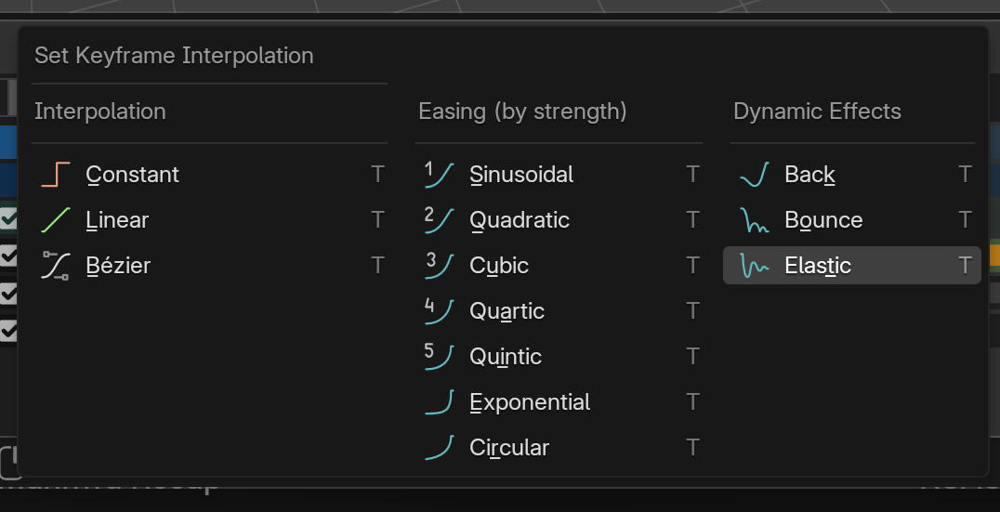
Interpolation in Practice
🎨 Choosing the Right Mode
Scenario: Bouncing ball
- In air (rising/falling): Bezier (smooth arcs)
- At ground impact: Linear approach (accelerating)
- At apex: Bezier (slow, natural pause)
- Mix modes for best result
Scenario: Door opening
- Start: Bezier (slow start, accelerates)
- Middle: Bezier continues (smooth motion)
- End: Bezier (decelerates to stop)
- Single mode works perfectly
Scenario: Robot walking
- Leg movements: Linear or minimal Bezier (mechanical)
- Foot down: Constant (instant plant)
- Body: Slight Bezier (not completely rigid)
- Mix creates convincing robot motion
Scenario: Light switch flipping
- Light state: Constant (on/off, no fade)
- Switch rotation: Bezier (smooth flip)
- Different properties use different modes
Easing Types (Advanced)
🎯 Fine-Tuning Bezier
Graph Editor handle types:
- Auto: Blender calculates smooth curve automatically
- Vector: Straight line to/from keyframe
- Aligned: Handles stay aligned (smooth tangent)
- Free: Independent handle control (maximum control)
Common easing needs:
- Ease in only: Slow start, then constant speed
- Ease out only: Constant speed, then slow stop
- Ease in/out (default): Slow start and stop
- No ease: Instant full speed (rarely desired)
How to adjust:
- We'll cover this in depth in Lesson 26 (Graph Editor)
- For now, trust default Bezier curves
- They work well for 90% of situations
💡 Interpolation: The Invisible Choice: Most viewers don't consciously notice interpolation—they just feel whether motion is smooth or jarring, natural or robotic. Bezier interpolation is the secret behind professional-looking animation. It's why Disney films feel fluid and alive, while amateur animations feel stiff and mechanical. The difference isn't in the poses (keyframes)—it's in the movement between poses (interpolation). Default Bezier will carry you incredibly far. Resist the urge to change it to Linear unless you have specific reason. Your animation will thank you.
✂️ Editing and Managing Keyframes
Creating keyframes is just the start. Professional animators spend most of their time editing—moving, copying, deleting, and refining keyframes. These skills separate quick drafts from polished animations.
Selecting Keyframes
🎯 Choosing What to Edit
In the Timeline:
- Click diamond: Select single keyframe
- Shift+Click: Add to selection (multiple keyframes)
- Box select (
B): Draw box around keyframes - Select all (
A): All keyframes on selected object - Deselect all (
Alt+A): Clear selection
Visual feedback:
- Selected keyframes: Lighter/highlighted diamonds
- Unselected keyframes: Normal diamonds
- Active keyframe: White outline
Selection matters because:
- All editing operations work on selected keyframes only
- Move, copy, delete only affects selection
- Always verify what's selected before editing
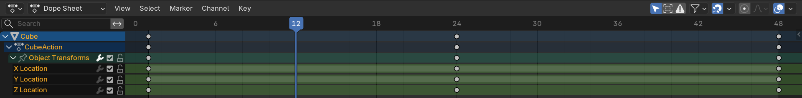
Moving Keyframes (Timing Adjustment)
⏰ Changing When Things Happen
Moving keyframes in Timeline:
- Select keyframe(s)
- Press
G(Grab/Move) - Move mouse left/right to slide keyframes
- Click to confirm, or
Escto cancel
Precise movement:
Gthen type number: Move exact frames (e.g.,G12= move 12 frames right)Gthen-12: Move 12 frames leftShiftwhile moving: Fine control (slower movement)Ctrlwhile moving: Snap to frame numbers
Why move keyframes:
- Timing adjustment: Action feels too fast—move end keyframe later
- Synchronization: Match action to audio beat or other animation
- Spacing changes: Create different rhythm
- Example: Move bounce peak from frame 12 to frame 18 (slower bounce)
Moving multiple keyframes:
- Select multiple keyframes (box select or Shift+Click)
- Press
Gto move all together - Maintains relative spacing between keyframes
- Useful for shifting entire animation sequences
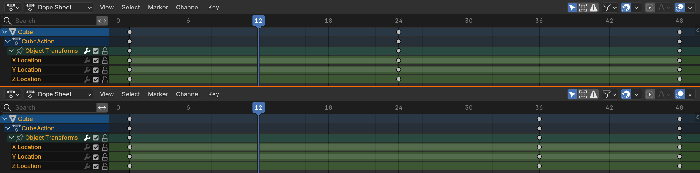
Scaling Keyframes (Timing Stretch)
📏 Speed Up or Slow Down
What scaling does:
- Scales time between keyframes
- Scale > 1.0: Animation slows down (keyframes spread apart)
- Scale < 1.0: Animation speeds up (keyframes compress together)
- Changes timing while keeping all keyframes
How to scale:
- Select keyframes (need at least 2)
- Press
S(Scale) - Move mouse away from center to stretch (slow down)
- Move mouse toward center to compress (speed up)
- Click to confirm
Example: Doubling animation time
- Animation from frame 1 to 24 (24 frames total)
- Select all keyframes, press
S - Type
2(scale by 2x) - Animation now from frame 1 to 48 (48 frames—twice as slow)
Example: Speeding up by half
- Animation from frame 1 to 48
- Select all keyframes, press
S - Type
0.5(scale by 50%) - Animation now from frame 1 to 24 (half duration—twice as fast)
Pivot point matters:
- Scaling happens from pivot point
- Default: 2D Cursor (current frame)
- Change pivot: Header → Pivot Point
- Useful: Set cursor to frame 1, scale from there
Copying and Duplicating Keyframes
📋 Reusing Animation
Copy and paste keyframes:
- Select keyframe(s)
Ctrl+C: Copy- Move to target frame
Ctrl+V: Paste- Keyframes duplicated at new location
Duplicate keyframes:
- Select keyframe(s)
Shift+D: Duplicate- Move mouse to position duplicates
- Click to place, or
Escto cancel
When to copy keyframes:
- Repetitive motion: Bouncing ball—copy first bounce to create subsequent bounces
- Symmetry: Left hand animation copied to right hand
- Cycles: Walking—copy walk cycle to extend duration
- Starting point: Copy keyframe as template for variation
Example: Creating walk cycle
- Frame 1: Left foot forward (keyframe)
- Frame 12: Right foot forward (keyframe)
- Select frame 1 keyframe, copy, paste at frame 24
- Select frame 12 keyframe, copy, paste at frame 36
- Continuous walk loop created
Deleting Keyframes
🗑️ Removing Unwanted Keys
Delete selected keyframes:
- Select keyframe(s) in Timeline
- Press
XorDelete - Confirm deletion
- Keyframes removed, interpolation adjusts
Clear all keyframes on property:
- Right-click property (e.g., Location X)
- Clear Keyframes
- All keyframes for that property removed
- Useful for starting over on one channel
When to delete keyframes:
- Over-keyframing: Too many keyframes make motion stiff
- Mistakes: Keyframe on wrong frame or object
- Simplifying: Reduce keyframes for cleaner curves
- Change of plan: Decided on different animation approach
Undo is your friend:
Ctrl+Z: Undo deletion- Keyframes come back
- Don't fear deletion—you can always undo
Keyframe Cleanup
✅ Maintaining Clean Animations
Signs your animation needs cleanup:
- Timeline cluttered with yellow diamonds
- Motion feels stiff or jerky
- Can't easily adjust timing (too many keyframes)
- Accidentally keyframed properties you didn't mean to
Cleanup strategies:
- Delete redundant keyframes: If three keyframes in a row have same value, keep first and last only
- Trust interpolation: Remove intermediate keyframes if Bezier handles it well
- Clear unused channels: Remove keyframes on properties that shouldn't animate
- Simplify curves: Graph Editor → Channel → Clean Keyframes
Professional habit:
- Review animation regularly
- Ask: "Does this keyframe need to exist?"
- Fewer keyframes = easier to edit later
- Keep animation as simple as effective
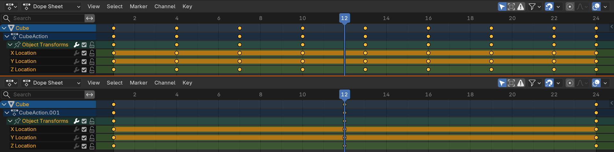
💡 Editing is Animation: Beginners think animation happens when creating keyframes. Professionals know animation happens when editing them. You'll move keyframes dozens of times, adjusting timing by 2-3 frames repeatedly until motion feels right. You'll delete keyframes you thought were essential. You'll copy and scale and nudge. This iterative refinement—not the initial keyframing—is where great animation emerges. Learn to edit fearlessly. Make changes. Try different timing. Undo freely. The perfect animation is usually your tenth attempt, not your first.
🤖 Auto-Keyframing Workflow
Auto-keyframing is a powerful feature that automatically creates keyframes when you transform objects. It's controversial—some animators love it, others avoid it. Understanding when and how to use it makes you more efficient.
What is Auto-Keyframing?
⚡ Automatic Keyframe Creation
How it works:
- When enabled, transforming an object automatically creates keyframes
- No need to press
Iafter every change - Keyframes created on properties that change
- Only works on already-animated properties (must have at least one keyframe)
Enabling auto-keyframe:
- Timeline header: Click record button (red circle icon)
- Or toggle in Scene Properties → Keying
- Button turns red when active
- Status: "Auto Keying" appears in Timeline
How it behaves:
- Move object → Location keyframe created automatically
- Rotate object → Rotation keyframe created automatically
- Scale object → Scale keyframe created automatically
- Only creates keyframes on current frame
Important limitation:
- Property must already be animated (have at least one existing keyframe)
- Example: If Location has keyframes, moving creates new Location keyframes
- If no keyframes exist, must manually insert first keyframe (
I) - This prevents accidental keyframing of everything
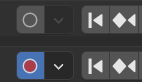
Auto-Keyframe Modes
🎛️ Different Auto-Key Behaviors
Mode 1: Add & Replace (default)
- Creates new keyframes or replaces existing ones
- If keyframe exists at current frame: Updates it
- If no keyframe at current frame: Creates one
- Most common mode
Mode 2: Replace
- Only replaces existing keyframes
- Never creates new keyframes
- If no keyframe at current frame: Does nothing
- Useful for editing existing animation without adding frames
Changing modes:
- Timeline header → Auto-key dropdown (next to record button)
- Or Scene Properties → Keying → Auto Keying Mode
Active Keying Set:
- Controls which properties auto-keyframe
- Default: All animated properties
- Can limit to Location only, Rotation only, etc.
- Timeline header → Keying Set dropdown
When to Use Auto-Keyframing
✅ Best Use Cases
Great for:
- Refining existing animation: Tweaking keyframes you already set
- Scrubbing and adjusting: Move to frame, adjust pose, auto-keyframe saves it
- Complex character animation: Many properties to keyframe simultaneously
- Iterative posing: Quickly trying different poses at different frames
- Experienced animators: Know exactly what they're keyframing
Example workflow with auto-key:
- Create initial keyframes manually (frame 1 and 24)
- Enable auto-keyframe
- Scrub to frame 12, adjust object position
- Keyframe automatically created
- Continue adjusting at various frames
- All changes automatically saved as keyframes
When to Avoid Auto-Keyframing
⚠️ Potential Pitfalls
Problems with auto-keyframing:
- Accidental keyframes: Moving object while exploring creates unwanted keyframes
- Cluttered timeline: Too many keyframes from casual adjustments
- Difficult to undo: May create keyframes on multiple properties at once
- Learning curve: Beginners often don't realize it's active
Avoid for:
- Learning phase: Better to manually keyframe to understand process
- Exploration: When trying different poses/positions without committing
- Blocking phase: Setting initial key poses (manual gives more control)
- Simple animations: Pressing
Itwice isn't much work
Common beginner mistake:
- Auto-key enabled, forget it's on
- Move object to check something
- Accidentally create keyframes all over timeline
- Animation becomes messy and hard to fix
- Solution: Be very aware of auto-key status (red button)
Auto-Keyframe Best Practices
💡 Using Auto-Key Effectively
Professional workflow:
- Start with manual keyframing: Set initial key poses using
I - Enable auto-key for refinement: Turn on when tweaking existing animation
- Stay frame-aware: Always check current frame before transforming
- Turn off when done: Disable when not actively keyframing
- Review regularly: Check Timeline for unexpected keyframes
Visual reminders:
- Red record button = auto-key ON (danger zone)
- Gray record button = auto-key OFF (safe mode)
- Get in habit of checking button color
- Some animators never use auto-key (perfectly valid)
Hybrid approach (recommended for beginners):
- Default: Auto-key OFF
- Enable temporarily when refining complex sections
- Disable immediately after
- Gives benefits without risks
Remember:
- Auto-key is a tool, not a requirement
- Many professional animators never use it
- Manual keyframing (
I) works perfectly fine - Choose what feels comfortable for your workflow
💡 Auto-Keyframe: Power Tool with Sharp Edges: Auto-keyframing is like a power saw—incredibly efficient in skilled hands, but dangerous if you're not paying attention. Experienced animators use it to fly through iterations, making hundreds of micro-adjustments without breaking flow. But beginners often leave it on accidentally and create keyframe chaos. Start without it. Master manual keyframing first. Then, when you feel constrained by pressing
Iconstantly, try auto-key for specific refinement tasks. Turn it on deliberately, use it intentionally, turn it off immediately. That's the professional approach.
📊 The Dope Sheet
The Dope Sheet is the Timeline's more powerful sibling. While Timeline shows a simplified view, Dope Sheet reveals every animated property in detail. Essential for managing complex animations with multiple objects and properties.
What is the Dope Sheet?
🎹 Advanced Timeline View
Dope Sheet vs Timeline:
- Timeline: Simplified, shows all keyframes as single diamonds
- Dope Sheet: Detailed, shows keyframes per property per object
- Both control same data, different visualizations
- Timeline = overview, Dope Sheet = detailed control
What Dope Sheet shows:
- List of animated objects (left panel)
- Expandable property channels (Location X, Y, Z, etc.)
- Keyframes for each channel (diamonds on timeline)
- Full animation hierarchy at a glance
Opening Dope Sheet:
- Change Timeline editor type to Dope Sheet
- Or use Animation workspace (often has Dope Sheet by default)
- Editor icon → Dope Sheet
Dope Sheet modes:
- Dope Sheet: Main mode (all animations)
- Action Editor: Single action view
- Shape Key Editor: For shape key animations
- Grease Pencil: For 2D animations
- Mask: For compositing masks
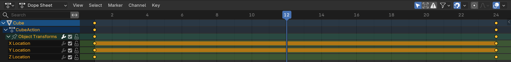
Dope Sheet Interface
🖥️ Layout and Navigation
Left panel (Channel List):
- Object names (e.g., "Cube", "Camera")
- Arrow to expand/collapse properties
- Property channels when expanded (Location, Rotation, Scale)
- Individual axes (Location X, Location Y, Location Z)
Right panel (Keyframe View):
- Timeline grid (same as Timeline editor)
- Keyframes shown as diamonds on property rows
- Each property has its own row
- Can see exactly which properties are keyframed
Example hierarchy view:
Cube
├─ Location
│ ├─ X Location
│ ├─ Y Location
│ └─ Z Location
├─ Rotation
│ ├─ X Euler Rotation
│ ├─ Y Euler Rotation
│ └─ Z Euler Rotation
└─ Scale
├─ X Scale
├─ Y Scale
└─ Z Scale
Visibility controls:
- Eye icon: Show/hide property in Graph Editor
- Lock icon: Prevent editing of property
- Mute icon: Temporarily disable animation on property
Working with the Dope Sheet
🛠️ Practical Operations
Selecting keyframes:
- Click diamond to select single keyframe
- Click channel name to select all keyframes in that channel
- Box select (
B) to select region - Select all (
A) for all visible keyframes
Moving keyframes per channel:
- Select keyframes on Location X only
- Press
Gto move just those keyframes - Other channels (Y, Z) unaffected
- Precise control over individual properties
Isolating properties:
- Want to see only Location animation?
- Collapse Rotation and Scale channels
- Focus on what matters
- Reduce visual clutter
Deleting specific property keyframes:
- Expand object, find property (e.g., Rotation)
- Select all keyframes in Rotation channels
- Press
Xto delete - Object keeps Location/Scale animation, loses Rotation
Dope Sheet for Multi-Object Animation
🎭 Managing Complex Scenes
Viewing multiple objects:
- Dope Sheet shows all animated objects in scene
- Each object gets its own row section
- Can see timing relationships between objects
- Example: When does Door open relative to Character walking?
Synchronizing animations:
- See all object timings at once
- Move Object A's keyframes to align with Object B's
- Create choreographed sequences
- Ensure multiple animations work together
Staggering actions:
- Three balls dropping
- Ball 1 starts at frame 1
- Ball 2 starts at frame 8 (select all keyframes,
G8) - Ball 3 starts at frame 16 (select all keyframes,
G16) - Cascading effect created easily
Filtering objects:
- Header → Filter Options
- Show only selected objects
- Show only objects in collection
- Reduce clutter in complex scenes
Summary Channels and Groups
📦 Organizing Animation Data
Summary channels:
- Top-level rows (Location, Rotation, Scale)
- Show all keyframes for that property type
- Selecting summary channel selects all sub-channels
- Example: Select "Location" to affect X, Y, and Z together
Grouping channels:
- Can create custom groups (e.g., "Arm", "Leg")
- Select channels → Channel → Move to Group
- Organize complex rigs
- Useful for character animation
Color coding:
- Can assign colors to channel groups
- Visual organization in Dope Sheet
- Quickly identify property types
- Right-click channel → Set Color
When to Use Dope Sheet vs Timeline
🎯 Choosing the Right Tool
Use Timeline for:
- Quick overview of animation timing
- Simple animations (single object, all properties together)
- Scrubbing and playback
- General navigation
- When you want simplified view
Use Dope Sheet for:
- Multi-object animations
- Editing specific properties independently
- Understanding what's actually keyframed
- Cleaning up unwanted keyframes on specific channels
- Complex timing relationships
- Character animation
Pro workflow:
- Many animators keep both open
- Timeline at bottom for overview and playback
- Dope Sheet in separate area for detailed editing
- Switch between as needed
💡 Dope Sheet: X-Ray Vision for Animation: The Timeline is like looking at a building from outside—you see the structure but not the rooms. The Dope Sheet is like X-ray vision—you see every floor, every room, every piece of furniture. When your Timeline shows a yellow diamond at frame 12, the Dope Sheet reveals whether that's Location X, Rotation Y, or all nine transform channels. This matters enormously when debugging. "Why is my cube rotating weirdly?" Open Dope Sheet, find unexpected Rotation Z keyframe, delete it. Problem solved. Master the Dope Sheet and you master animation troubleshooting.
🎨 Project: Multi-Object Animated Scene
Let's put everything together. You'll create a scene with multiple animated objects, demonstrating keyframe management, timing control, and professional workflow. This project reinforces all the concepts from this lesson.
Project Overview
🎯 Your Mission
Create a synchronized animation scene with:
- Three objects: Ball, Cube, Cylinder
- Staggered timing: Each object starts at different frame
- Different motions: Ball bounces, Cube rotates, Cylinder scales
- Clean keyframes: Only necessary keyframes, proper interpolation
- Total duration: 96 frames (4 seconds at 24fps)
This demonstrates Timeline mastery, Dope Sheet usage, and keyframe management
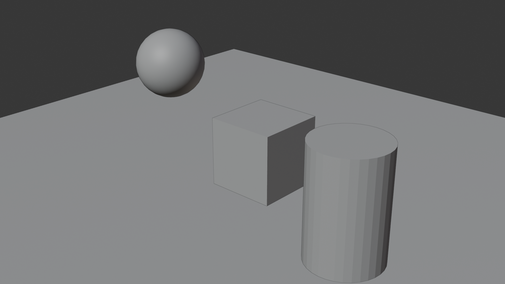
Phase 1: Scene Setup (5 minutes)
🛠️ Building the Stage
Create objects:
- New Blender file, delete default cube
- Add UV Sphere (
Shift+A→ Mesh → UV Sphere)- Name it "Ball" (F2 or outliner)
- Position at X=-4, Y=0, Z=5
- Add Cube (
Shift+A→ Mesh → Cube)- Name it "Cube"
- Position at X=0, Y=0, Z=2
- Add Cylinder (
Shift+A→ Mesh → Cylinder)- Name it "Cylinder"
- Position at X=4, Y=0, Z=2
- Add Plane for ground (
Shift+A→ Mesh → Plane)- Scale it large (S 20)
Camera and lighting:
- Position camera to see all three objects
- Add Sun light for illumination
- Optional: Add simple materials for visual interest
Set frame range:
- End frame: 96 (4 seconds at 24fps)
- Timeline → Set end frame to 96
Phase 2: Animating the Ball (10 minutes)
⚽ Bouncing Ball Animation
Create bounce animation:
- Select Ball object
- Frame 1: Ball at starting height (Z=5)
- Press
I→ LocScale
- Press
- Frame 16: Ball at ground (Z=1), squashed
- Location Z = 1
- Scale: 1.3, 1.3, 0.7
- Press
I→ LocScale
- Frame 28: Ball at medium height (Z=3.5), neutral
- Location Z = 3.5
- Scale: 1, 1, 1
- Press
I→ LocScale
- Frame 40: Ball at ground (Z=1), squashed
- Location Z = 1
- Scale: 1.2, 1.2, 0.8
- Press
I→ LocScale
- Frame 48: Ball at low height (Z=2), neutral
- Location Z = 2
- Scale: 1, 1, 1
- Press
I→ LocScale
- Frame 54: Ball settles at ground (Z=1)
- Press
I→ LocScale
- Press
Refine timing:
- Open Graph Editor
- Check Z Location curve—should have parabolic arcs
- Ensure Bezier interpolation (smooth curves)
- Adjust if needed for better bounce feeling
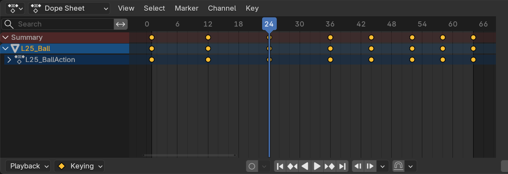
Phase 3: Animating the Cube (8 minutes)
🎲 Rotating Cube Animation
Create rotation animation:
- Select Cube object
- Frame 20: Starting rotation (0°)
- Press
I→ Rotation
- Press
- Frame 60: Full rotation (360° on Z axis)
- Rotate Z: 360° (
RZ360) - Press
I→ Rotation
- Rotate Z: 360° (
- Frame 80: Continue rotation (540° total)
- Rotate Z: additional 180°
- Press
I→ Rotation
Refine:
- Check interpolation—should be Bezier (smooth acceleration)
- Graph Editor: Rotation Z curve should be smooth S-curve
- Play animation—cube should ease in, rotate smoothly, ease out
Note about rotation values:
- Blender stores rotation in radians or degrees (depending on settings)
- 360° = one full rotation
- If cube rotates weirdly, check rotation mode (Properties → Object → Rotation)
Phase 4: Animating the Cylinder (8 minutes)
⚙️ Scaling Cylinder Animation
Create pulsing scale animation:
- Select Cylinder object
- Frame 30: Normal scale (1, 1, 1)
- Press
I→ Scale
- Press
- Frame 50: Compressed scale (1.5, 1.5, 0.5)
- Scale Z: 0.5 (shorter)
- Scale X and Y: 1.5 (wider to preserve volume)
- Press
I→ Scale
- Frame 70: Stretched scale (0.7, 0.7, 1.5)
- Scale Z: 1.5 (taller)
- Scale X and Y: 0.7 (thinner)
- Press
I→ Scale
- Frame 90: Return to normal (1, 1, 1)
- Press
I→ Scale
- Press
Result:
- Cylinder pulses—squash, stretch, return
- Volume approximately preserved (wider when shorter)
- Organic, living feeling despite being simple geometry
Phase 5: Timing Refinement with Dope Sheet (10 minutes)
🎼 Orchestrating the Scene
Open Dope Sheet:
- Change Timeline editor to Dope Sheet
- Should see all three objects listed
- Expand each to see property channels
Verify timing:
- Ball: Starts frame 1
- Cube: Starts frame 20
- Cylinder: Starts frame 30
- Staggered cascade effect
Synchronize ending:
- All animations should complete by frame 90-96
- If needed, select object's keyframes, scale (
S) to compress or expand timing - Goal: Choreographed sequence with clean ending
Clean up keyframes:
- Check Dope Sheet for unnecessary keyframes
- Delete any redundant keyframes (same value as interpolation would create)
- Ensure only necessary keyframes remain
Phase 6: Final Review and Rendering (5 minutes)
🎬 Polishing and Output
Review checklist:
- ✓ Play animation start to finish—does it feel cohesive?
- ✓ Ball bounces decrease in height (energy loss)?
- ✓ Cube rotation is smooth (no sudden jumps)?
- ✓ Cylinder scale preserves volume (wider when shorter)?
- ✓ All animations end cleanly by frame 96?
- ✓ No accidental keyframes on properties that shouldn't animate?
Test interpolation:
- Graph Editor: Check all curves for smoothness
- Timeline: Scrub through slowly—motion should be fluid
- Fix any jerky motion by adjusting keyframe timing or interpolation
Optional rendering:
- Set camera to nice angle showing all three objects
- Output Properties → Format: FFmpeg video or PNG sequence
- Render Animation (Render → Render Animation)
- Save and watch your creation!
Success Criteria
✅ Project Quality Check
Technical requirements:
- ✓ Three animated objects with different motion types
- ✓ Staggered start times (not all starting at frame 1)
- ✓ Appropriate interpolation (Bezier for organic motion)
- ✓ Clean Timeline/Dope Sheet (no unnecessary keyframes)
- ✓ Total duration: 96 frames
- ✓ Smooth playback with no glitches
Animation principles applied:
- ✓ Ball: Squash/stretch, arcs, timing (from Lesson 24)
- ✓ Cube: Smooth ease in/out on rotation
- ✓ Cylinder: Volume preservation during scale
- ✓ Scene: Choreographed timing, visual interest
Workflow skills demonstrated:
- ✓ Manual keyframing with
Ikey - ✓ Keyframe editing (moving, timing adjustments)
- ✓ Dope Sheet navigation and management
- ✓ Graph Editor verification
- ✓ Multi-object animation orchestration
💡 From Keyframes to Storytelling: This project might seem simple—just three objects doing basic motions. But you've orchestrated a sequence. Ball starts the scene, Cube follows, Cylinder completes the trio. There's rhythm, timing, progression. This is storytelling fundamentals. Every complex animation—character films, game cinematics, product demos—is just this principle scaled up. More objects, more properties, more complexity. But the core workflow you just practiced? Keyframes, timing, refinement, orchestration? That's the professional process. You're not just learning software—you're learning the craft of animation direction.
📝 Lesson Summary
Congratulations! You've mastered Blender's Timeline and keyframe workflow—the foundation of all animation work. These aren't just technical skills; they're the tools you'll use every single time you animate.
🎯 Key Takeaways
- Timeline is your animation GPS: Shows where you are in time and where keyframes live
- Keyframes define moments: You set key poses, Blender interpolates between
- Interpolation creates motion: Bezier (smooth) is default and best for most cases
- Editing is iterative: Move, scale, copy keyframes until timing feels right
- Dope Sheet shows detail: Essential for complex animations and troubleshooting
- Auto-key is optional: Powerful but requires discipline—start without it
- Fewer keyframes = better: Trust interpolation, only keyframe what's necessary
Timeline and Keyframe Tools Recap
🛠️ Your Animation Toolkit
Essential keyboard shortcuts:
Spacebar: Play/Pause animationLeft/Right Arrow: Step forward/backward one frameShift+Left/Right Arrow: Jump to start/endI: Insert keyframe menuG: Move selected keyframesS: Scale selected keyframes (timing stretch)X: Delete selected keyframesShift+D: Duplicate keyframesT: Change interpolation modeA: Select all keyframes
Three ways to create keyframes:
Ikey menu (standard method)- Right-click property → Insert Keyframe (specific properties)
- Click diamond icon next to property (visual method)
Interpolation modes:
- Bezier: Smooth curves, ease in/out (default—use 90% of time)
- Linear: Constant speed, straight line (mechanical objects)
- Constant: Hold value until next keyframe (binary states)
Professional Workflow Summary
💼 Industry-Standard Approach
The blocking workflow (pose-to-pose):
- Set key poses: Start, end, major breakdowns (manual
I) - Check timing: Play animation, does it feel right?
- Add breakdowns: Intermediate poses where needed
- Refine timing: Move keyframes until rhythm feels good
- Polish interpolation: Adjust curves in Graph Editor (next lesson)
- Final review: Clean up unnecessary keyframes
What professionals do:
- Think in frames, not seconds: "24 frames" not "1 second"
- Start simple: Block major poses with minimal keyframes
- Iterate timing: Move keyframes repeatedly until perfect
- Trust interpolation: Don't over-keyframe
- Use Dope Sheet: For multi-object and complex animations
- Review constantly: Play animation hundreds of times while refining
Common beginner mistakes to avoid:
- ❌ Keyframing every frame manually
- ❌ Using Linear interpolation for organic motion
- ❌ Forgetting which frame you're on
- ❌ Leaving auto-keyframe on accidentally
- ❌ Never using Dope Sheet for complex animations
- ❌ Not checking Timeline for keyframe placement
Timeline vs Dope Sheet vs Graph Editor
🎛️ Three Views, Same Data
Timeline (simplified overview):
- Shows: All keyframes as single diamonds
- Best for: Quick overview, playback, scrubbing
- Use when: You need simple timing reference
- Weakness: Can't see individual properties
Dope Sheet (detailed organization):
- Shows: Keyframes per property per object
- Best for: Multi-object animation, property management
- Use when: Managing complex scenes, isolating properties
- Weakness: Doesn't show curve shapes
Graph Editor (curve control—Lesson 26):
- Shows: Animation curves, precise values over time
- Best for: Fine-tuning timing, adjusting easing
- Use when: Perfecting motion feel
- Coming next lesson!
Professional setup:
- Timeline at bottom (always visible for playback)
- Dope Sheet for property management
- Graph Editor for curve refinement
- Switch between as workflow demands
Advanced Tips and Tricks
🚀 Level Up Your Workflow
Markers for organization:
- Press
Min Timeline to add marker - Name markers: "Jump starts", "Impact", "Landing"
- Visual bookmarks in your animation
- Jump between markers quickly
- Essential for longer animations
Preview range workflow:
- Working on frames 24-48 only?
- Select frames, Playback → Set Preview Range
- Animation loops just that section
- Perfect small sections without watching whole animation
Alt+Pto clear preview range
Keying sets (advanced):
- Custom groups of properties to keyframe together
- Example: "Face" keying set includes eyes, mouth, brows
- Press
Iwith keying set active → only those properties keyframed - Useful for character animation (coming in later lessons)
Action management:
- Each animated object has an "Action" (collection of keyframes)
- Can create multiple actions per object
- Example: "Walk", "Run", "Jump" actions for character
- Switch between in Action Editor
- We'll explore this more in character animation
Frame rate tricks:
- Animation looks too fast at 24fps?
- Try 30fps playback—same frames, slower time
- Or scale all keyframes to stretch timing
- Frame rate doesn't change keyframes, just playback speed
Troubleshooting Common Issues
🔧 Solving Problems
Problem: "My object isn't animating!"
- ✓ Check Timeline—are there keyframes? (yellow diamonds)
- ✓ Is object selected? (Only selected object shows yellow diamonds)
- ✓ Are you on frame 1? (Object might animate later in timeline)
- ✓ Is property keyframed? (Right-click property—see if orange background)
- Solution: Insert keyframes with
Ikey
Problem: "Animation is jerky/stuttering"
- ✓ Check interpolation—is it Linear? (Should be Bezier)
- ✓ Open Graph Editor—are curves jagged?
- ✓ Too many keyframes causing stiffness?
- Solution: Select keyframes,
T→ Bezier, delete extra keyframes
Problem: "Keyframes on wrong frame"
- ✓ Check current frame indicator (blue line in Timeline)
- ✓ Keyframe went where playhead was, not where you wanted
- Solution: Select keyframe,
Gto move to correct frame
Problem: "Too many keyframes, animation is messy"
- ✓ Auto-keyframe was left on accidentally?
- ✓ Check Dope Sheet—see all keyframed properties
- Solution: Clean up unnecessary keyframes, select and delete extras
Problem: "Can't see my keyframes in Timeline"
- ✓ Is correct object selected?
- ✓ Are keyframes outside visible frame range? (Scroll/zoom Timeline)
- ✓ Check Dope Sheet to see all keyframes
- Solution: Select object, zoom Timeline to see full range
Problem: "Animation too fast/too slow"
- ✓ Check keyframe spacing—close together = fast, far apart = slow
- ✓ Select all keyframes,
Sto scale timing - Solution: Scale keyframes or move individual ones
Next Steps in Your Animation Journey
🎓 Building on This Foundation
What you've mastered:
- ✓ Timeline navigation and playback control
- ✓ Creating, editing, and managing keyframes
- ✓ Understanding interpolation modes
- ✓ Multi-object animation coordination
- ✓ Dope Sheet for detailed animation management
Practice exercises to reinforce learning:
- Exercise 1: Animate 5 bouncing balls with staggered timing
- Exercise 2: Create "domino effect" with 10 cubes falling in sequence
- Exercise 3: Animate simple machine with rotating gears (synchronized timing)
- Exercise 4: Create looping animation (end matches start seamlessly)
- Exercise 5: Recreate timing of famous animation shot (study reference)
Coming in next lessons:
- Lesson 26: Graph Editor deep dive—perfecting curves and easing
- Lesson 27: Character animation basics—applying principles to armatures
- Both build directly on Timeline/keyframe skills you learned today
Additional resources:
- Study professional animations frame-by-frame
- Recreate simple shots from films/games
- Record video reference of yourself moving
- Animate along with online animation challenges
The Timeline Mindset
🧠 Thinking Like an Animator
Professional animators constantly think:
- "What frame am I on?" Always aware of current frame
- "Where are my keyframes?" Timeline shows animation structure
- "How many frames between keys?" Spacing determines speed
- "Does this need a keyframe?" Only keyframe what's necessary
- "Should I check the curve?" Graph Editor verification
Building animation muscle memory:
- Practice keyboard shortcuts until automatic
Spacebarto play should be instinctIfor keyframe should be reflex- Moving keyframes should feel natural
- The less you think about tools, the more you think about animation
From technique to artistry:
- Right now, Timeline is a new tool you're learning
- After 100 animations, it's invisible—you just animate
- Tools fade into background, creativity comes forward
- That's when animation becomes art
🎬 You're an Animator
Every professional animator started exactly where you are now—learning to place keyframes, adjust timing, and trust interpolation. The Timeline might feel like just a technical interface, but it's actually your canvas. Those yellow diamonds? They're brushstrokes. Moving them, spacing them, timing them—that's painting with motion.
In Lesson 24, you learned what makes animation work (the principles). Today, you learned how to make animation (the tools). These two lessons are the foundation of everything that follows. Understand principles, master Timeline and keyframes, and you can animate anything. Character walks, camera moves, product demos, game cinematics—all use these exact same tools and workflows.
The difference between you and the animators you admire isn't talent or secret knowledge. It's practice time with these tools. They've placed a million keyframes. You've placed dozens. That gap closes with every animation you make. So make many. Make bad ones. Make good ones. Make weird experiments. Each one builds muscle memory and intuition.
Next lesson, we'll open the Graph Editor—where good animation becomes great animation. But before moving on, create three more animations using only what you've learned so far. Bouncing balls, rotating objects, scaling shapes. Simple is good. Repetition builds mastery. The Timeline is your new home. Get comfortable here.
Next: Master the Graph Editor and perfect your curves! 📈